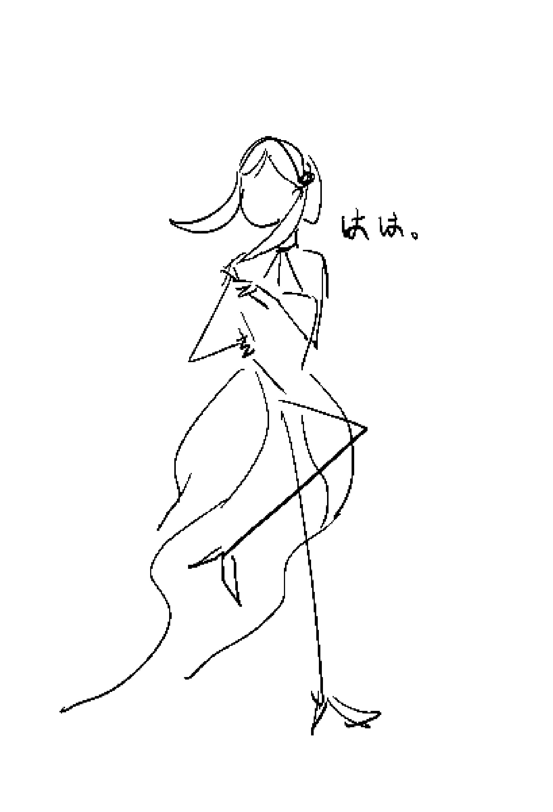

Yor Forger
My mommy is very strong. But unlike daddy, she never shows any scary face to me. She is kind and gentle. Although she is not good at cooking, emm, in fact, really bad at it, she is still a very good mom to me. Despite her works in the city hall,she is a killer in the legendary level organization 'Garden'. Her younger brother, Yori is a really funny uncle.

Click me to see all the missions we have on tv!